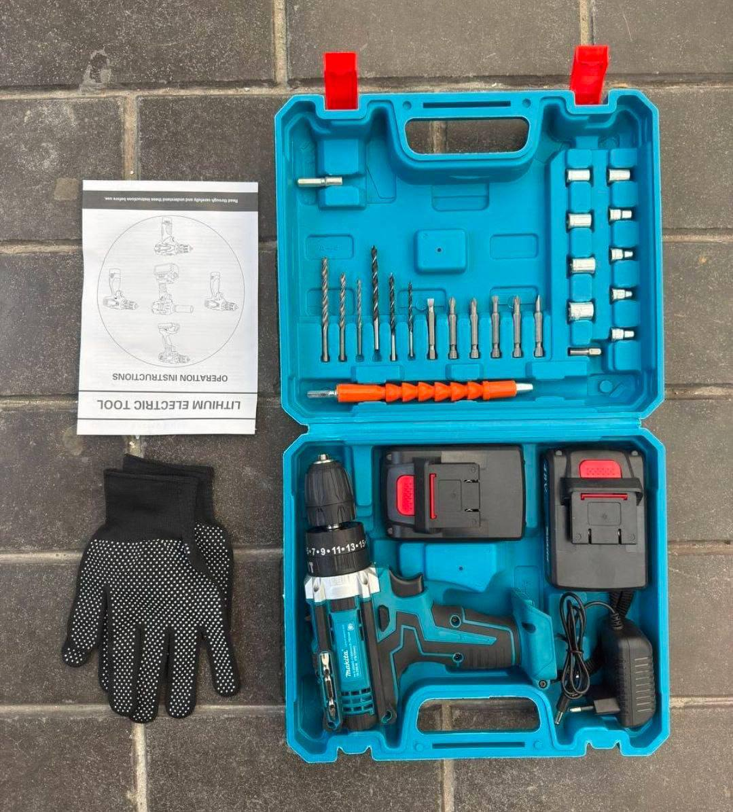

Есть интерес, но нет плана
Разложим первые шаги: ниша, товар, расчёты, поставка, реклама.
Практическое обучение Wildberries
Помогу пройти путь от идеи до поставки без хаоса: выбрать нишу, посчитать юнит-экономику, подготовить карточку и понять, где можно потерять деньги.
На первой встрече разберём вашу идею, бюджет и ближайшие шаги без давления на покупку курса.
До закупки
Юнит-экономика
Для кого
Если хочется зайти на Wildberries осознанно, а не покупать товар на удачу.
Разложим первые шаги: ниша, товар, расчёты, поставка, реклама.
Смотрим спрос, конкурентов, цену, расходы и потенциальные ограничения.
Считаем комиссию, логистику, упаковку, рекламу и прибыль с единицы.
Сначала проверяем цифры и сценарии, потом принимаем решение о закупке.
Путь продавца
Маршрут без магии: каждый шаг связан с понятным решением и расчётом.
Проверяем спрос, конкуренцию и ограничения категории.
Считаем себестоимость, комиссию, логистику и рекламу.
Планируем закупку, упаковку, маркировку и складскую логику.
Оформляем карточку, собираем гипотезы и тестируем продвижение.
Сравниваем план с фактом и корректируем цену, рекламу, остатки.
Считаем прибыльность товара до закупки: цену, себестоимость, комиссии, логистику, упаковку и рекламу.
Разбираем схему, где товар хранится у продавца, а отгрузка идёт после заказа покупателя.
Смотрим схему поставки на склад маркетплейса, требования к остаткам и влияние хранения на экономику.
Обсуждаем маркировку, категории товаров, документы и риски, которые важно проверить заранее.
Разбираем, как визуально показать преимущества товара в карточке и не потерять внимание покупателя.
Программа
Структура готова для уточнения под ваш формат: консультация, мини-курс или сопровождение.
Роли продавца, базовые правила, деньги, документы и ограничения.
Как смотреть спрос, конкурентов, сезонность и риски закупки.
Считаем прибыльность до закупки, а не после неприятных сюрпризов.
Что уточнить у поставщика, как подготовить упаковку и первую партию.
Название, описание, фото, характеристики и базовая поисковая логика.
Как запускать тесты, читать цифры и не тратить бюджет вслепую.
Сравниваем схемы хранения и отгрузки, чтобы выбрать формат под товар, бюджет и скорость запуска.
Калькулятор
Калькулятор показывает ориентировочную модель. Перед закупкой цифры нужно уточнить под категорию, склад, тарифы и фактические расходы.
Кейсы
Неподтверждённые истории и цифры убраны. Здесь предусмотрена структура для будущих материалов.

Блок подготовлен под нишу, стартовую ситуацию, расчёты, действия и подтверждённый результат.

Сюда можно добавить скрин кабинета, таблицу расчётов или обезличенную аналитику.
Как проходит работа
Сначала диагностируем ситуацию, затем собираем план действий.
Вы кратко описываете опыт, бюджет, идею товара и главный вопрос.
Смотрим, что уже понятно, где риски и какие цифры нужно уточнить.
Формируем следующие шаги: товар, расчёт, поставка, карточка, реклама.
Дальше можно идти консультационно или в сопровождении, если это нужно.
Тарифы
Цены и наполнение лучше заменить на ваши реальные условия перед публикацией.
Цена уточняется
Цена уточняется
Цена уточняется
Бесплатная консультация
На короткой встрече разберём вашу идею, стартовый бюджет и главный вопрос по Wildberries. После консультации у вас будет понятный следующий шаг без давления и лишних обещаний.
Отзывы
Короткие впечатления о практическом подходе, расчётах и понятной последовательности запуска.
«До обучения вообще не понимал, с чего начинать на Wildberries. Больше всего боялся неправильно выбрать товар и потерять деньги. Разобрали поиск товара, расходы, комиссии и юнит-экономику. Теперь хотя бы понимаю весь процесс и могу принимать решения по цифрам, а не наугад.»
«Мне понравилось, что всё объясняется простым языком и без обещаний быстрых миллионов. До этого смотрела много бесплатных видео, но информация была разбросана. Здесь наконец появилась понятная последовательность: что анализировать, как считать товар и что делать перед первой закупкой.»
«Я уже пробовал самостоятельно разобраться с Wildberries, но постоянно путался в комиссиях, логистике и рекламе. После разбора стало понятно, где именно можно потерять прибыль и почему важно считать экономику ещё до закупки. Для новичка особенно полезен именно практический подход.»
FAQ
Да, но важно начинать с проверки экономики и рисков. Обучение как раз рассчитано на понятный вход в тему.
Единой суммы нет: бюджет зависит от категории, закупки, логистики, упаковки, рекламы и запаса на ошибки. Поэтому сначала считаем конкретный товар.
Достаточно телефона или компьютера, доступа в интернет и готовности разбираться в цифрах. Идея товара, бюджет или уже выбранная ниша будут плюсом, но это не обязательно: на обучении можно начать с нуля и постепенно собрать понятный план запуска.
Нет. Wildberries — это бизнес с рисками. Задача обучения — помочь принимать решения на основе цифр и снизить вероятность грубых ошибок.
Пока backend не подключён, форма сохраняет черновик обращения в браузере и показывает текст, который можно отправить в Telegram.
Финальный шаг
Опишите ситуацию, бюджет и идею товара. Сейчас форма работает как подготовленный черновик для будущего подключения Telegram/API.
Написать в Telegram